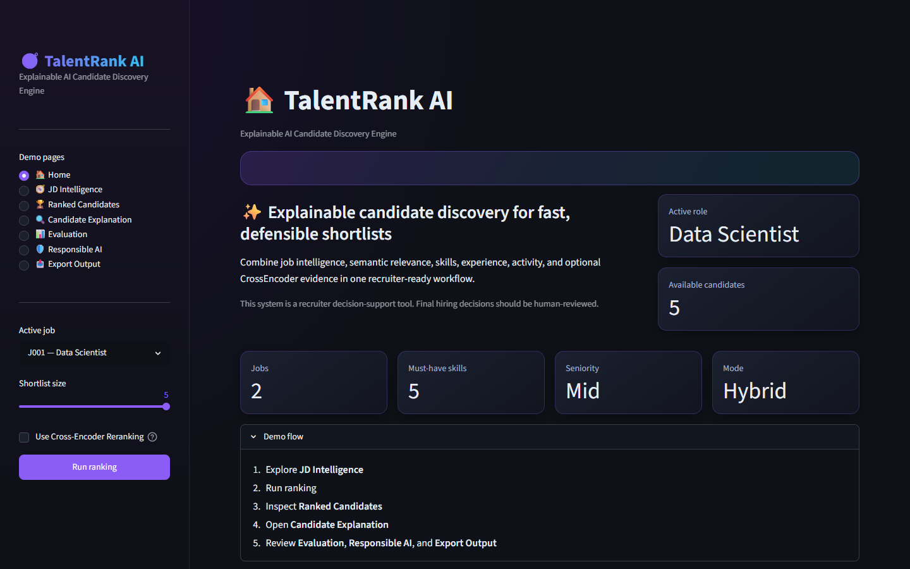
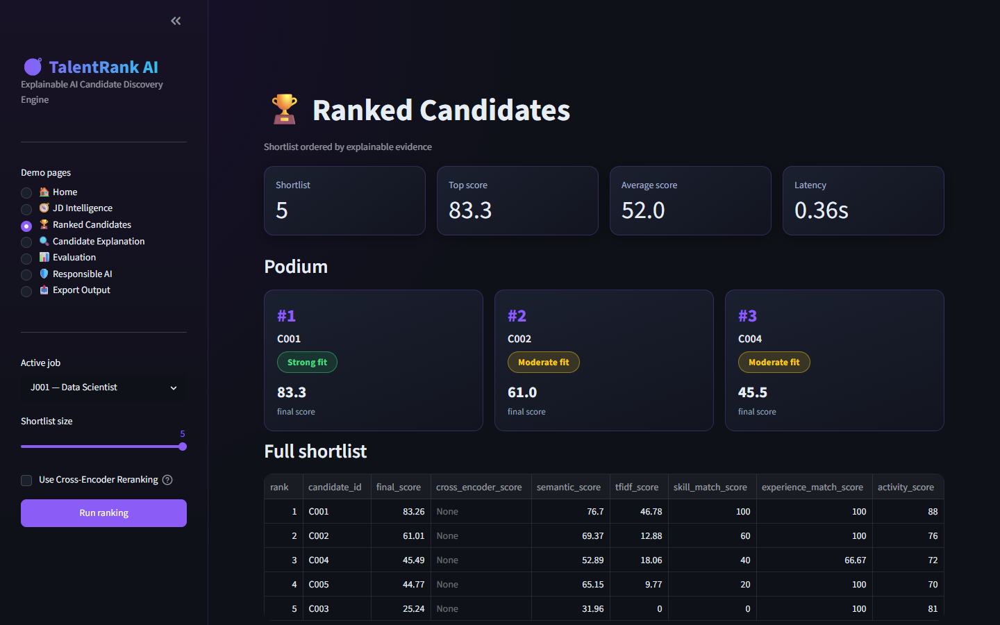
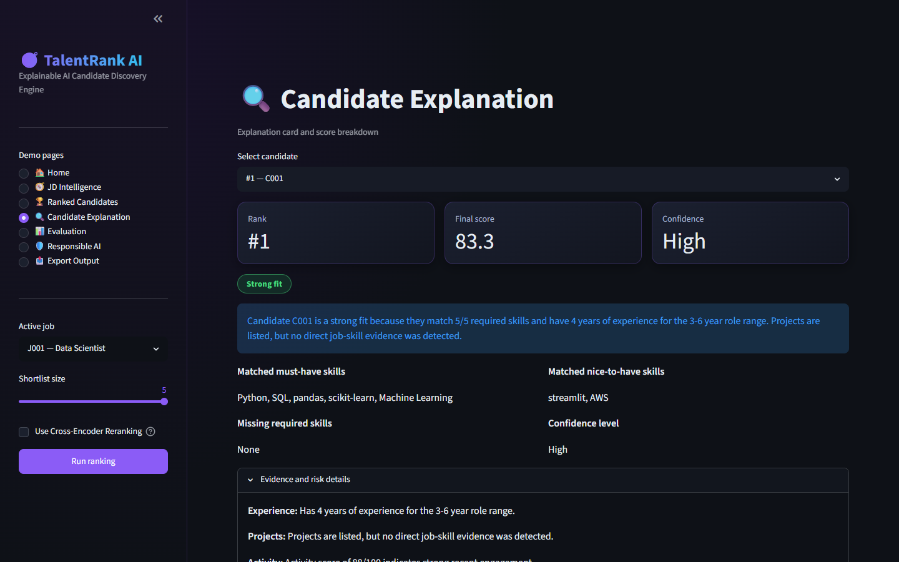
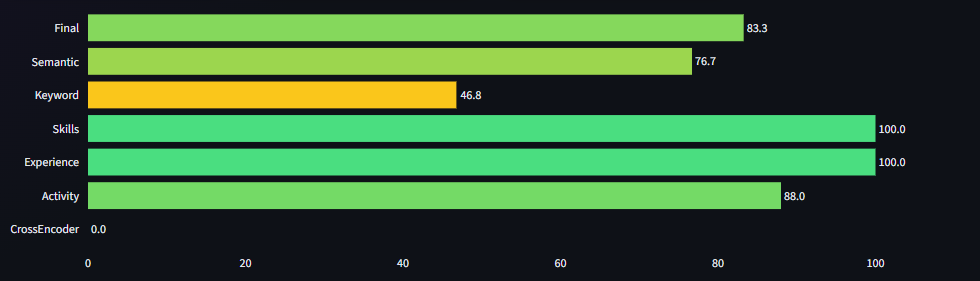

Explainable AI Candidate Discovery Engine — turning a job description
and a candidate pool into a transparent, evidence-backed shortlist.
Traditional applicant-tracking workflows lean on keyword filters. That approach misses semantically relevant candidates, over-ranks shallow keyword matches, and gives recruiters little basis to defend a shortlist decision.
A candidate who says "led a team" instead of "management experience" gets skipped, even with the right background.
Recruiters need evidence — matched skills, experience fit, gaps — not a black-box score.
Name, gender, age, and similar fields must never influence a ranking decision.
Rule-based extraction of role, seniority, must-have / nice-to-have skills, responsibilities, domain, and experience range.
Candidate and job text built only from approved ranking fields — sensitive attributes are never added.
TF-IDF + Sentence-Transformer (MiniLM) semantic similarity + skill coverage narrow the pool to a top-50 shortlist.
Pairwise relevance scoring over the top-50 for higher-fidelity ordering when latency allows.
Every ranked candidate gets a fit summary, matched/missing skills, evidence, and a risk statement.
Every run writes an audit trail of used features, excluded fields, and the decision-support disclaimer.
Semantic-only retrieval misses exact skill/tool matches recruiters expect to see (e.g. "AWS"). TF-IDF keeps lexical precision; embeddings add meaning. Combining both outperforms either alone on a small, noisy candidate pool.
CrossEncoder scoring is accurate but slow on CPU. Restricting it to the top-50 hybrid shortlist keeps latency practical while still getting the most accurate model where it matters most.
A ranked list without justification isn't useful to a recruiter who has to defend a shortlist decision — so every candidate carries structured evidence, not just a number.
src/fairness.py excludes name, gender, religion, caste, age, DOB, photo, marital status, and
address from profile text and scoring — structurally, not by convention.
Fast to build, easy for judges to run locally, and good enough for a recruiter-facing decision-support tool at hackathon scope.
When CrossEncoder is disabled, its 30% weight redistributes equally to semantic similarity and skill coverage.
Without labels: average top-10 skill coverage, semantic score, experience match, and ranking latency — plus an ablation comparing TF-IDF only, Semantic only, Hybrid, and Hybrid + CrossEncoder.




This system is a recruiter decision-support tool. Final hiring decisions should always be human-reviewed.